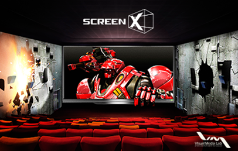
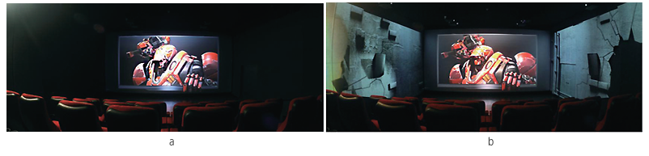
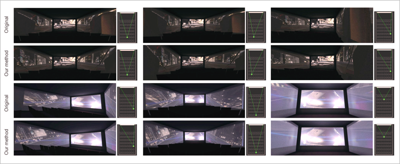

Top 10
Top 10
KAIST RESEARCH ACHIEVEMENTS
ScreenX-Immersive Movie Viewing Experience
(GSCT) Junyong Noh
Summary
ScreenX enlarges the storytelling canvas from one side screen to three side screens. This opens up new opportunities in movie directing. For instance, a monster in a horror movie can appear from the back of the theatre through the side screens. Similarly, in a car chase scene a car can zoom past the audience along the side to the front. Theatre walls will appear as if they are cracking in an earthquake scene. A huge airplane can pop out of the frame of the main screen after an unfortunate crash. Such utilization of the additional side screens help the audience be immersed while enjoying a movie.
R&D Report

Over the past several decades, researchers in computer graphics have strived to provide people with more visually immersive experiences than previously possible. For instance, continuous technical advancements in various research fields of 3D graphics applied to movies have successfully satisfied the ever-growing expectations of the audience, as seen with recent releases of visually stunning blockbuster movies and lifelike animated films. In particular, the visual domain has been expanded from flat 2D screens to 3D space using stereoscopy. The depth perception produced by stereoscopy effectively brings the audience one step closer to the 3D virtual world provided by more realistic visual content. However, stereoscopic movies suffer from two major limitations requirement of wearing glasses and visual fatigue. ScreenX effectively bypasses the limitations of the stereo movies while providing a strong sense of immersion in a different way.
ScreenX Setup
A movie theatre consists of the front screen and the left and right walls. We treat the left wall as the left logical screen and the right wall as the right logical screen. Multiple projectors form each of these two logical screens. To determine the relationship between the projectors and align them to create a perfect logical screen, a planar perspective transform for each projector is estimated semi-automatically. Non-linear edge blending is applied for seamless transitions between the images created by the adjacent projectors. Similarly, black offsets between the projectors are matched and color/geometry corrections are performed to ensure consistent image qualities. A black mask is applied to the top and the bottom areas, which are outside the horizontal extension of the front screen, to match the heights between the front and the side screens. Low projection areas where seats are affected are also masked out to avoid possible interference of the beam with the eyes of the viewers. Figure 1 shows an example theatre with the ScreenX system.
 Fig 2. The ScreenX system converts common movie theatres (a) to public immersive theatres (b) by utilizing the left and the right side walls as additional screens using a multi-projection technique without major modification of the existing structure of a theater.
Optimized Immersive
Movie Viewing Experiences
To verify the validity of our method, we compared the output content resulting from our method with the original content. Figure 2 shows images captured from the viewpoints of three random seats. In the case of the original content, perspective distortions are apparent when viewed from all three seats. In the first and the second images, the front areas of both side screens are squeezed whereas the rear areas are stretched. This distortion can interfere with sense of immersion. The second row shows that our method effectively reduces the distortion and consequently the output content has clear perspective effects for all three seat locations. The image in the third column shows a case where the viewer is seated very close to the side screen. The original content displayed on the right screen is hard to interpret, due to the close proximity. On the other hand, our method generates a better representation of the content. The third and fourth rows are another example illustrating the superiority of our method. The buildings of the original content are severely distorted and the overpass is bent downward. Our method alleviates the problems and improves the quality of the resulting images.
 Fig 3. Comparison between the original content and the resulting content from our method
Expectation Effectiveness
As ScreenX requires no major modification of the current structures of the theatres, it is easy to covert a theatre to be ScreenX ready. In fact, ScreenX has been successfully deployed in 50+ actual movie theatres in Korea and this number grows rapidly. Accordingly, scores of commercials have been produced for ScreenX viewing and this trend of producing commercials in a ScreenX form continues. A 30 minutes short first ScreenX movie, theX, was successfully showcased in Busan International Film Festival (BIFF) 2013. Finally, feature length block-buster movies are currently under production in Korea. Movie theatres in USA as well as in Asia are expected to adopt the system starting from 2014.
Research Funding
ㆍsupported by CJ-CGV/KAIstudio
Research Results
ㆍInternational Media Coverage : The Atlantic, Wall Street Journal, TV Tokyo
ㆍSelected Korean Media Coverage : KBS, MBC, SBS, YTN, Chosun Ilbo
ㆍFeatured in Busan International Film Festival, 2013